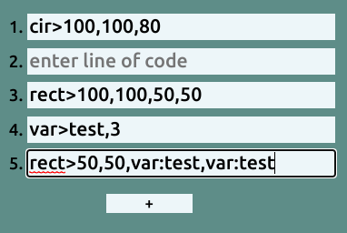
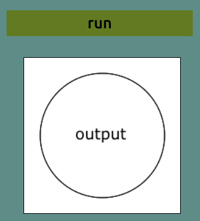
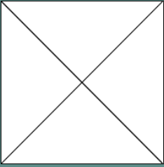

Welcome to saladScript, a programming language for beginners. In this tutorial we will make a first program and learn the basics of saladScript. To start off with, let's cover the saladScript UI(the buttons and stuff). You have the navbar:
The navbar has the “save” and “load” button also the “help” button. “save” well, saves your project and “load” well, loads a project. That’s all for the navbar now onto the script editor:
The “script editor” is what you make your scripts in. there are lines that you right code in(will get to the coding part in a bit). To add a line click the “+” button or press Enter, and Ctrl+Backspace to remove the last line. Now onto the output:
This is where your code’s output is. The “run” button will run your project. You can also press Ctrl+Shift. Now onto some CODING(finally).
For are first project we will be making a big “X” on the output it will look like this:
To start out with, we need to know how we write code in saladScript (a.k.a. syntax)
A typical line of code will look like this: nameOfCommand>value1,value2,ect.
Now that we got that out of the way, let's make the first line.
The output has 200x200px in it, so if we want to go-to the center of the output we move to “x 100 and y 100” x(left to right) and y(up and down).
To start the first line we need to move to the top left corner of the screen. We can use the ‘move’ command and x0,y0 is the top left of the screen so the first line is move>0,0 (the first value is x and second value is y).
Now we need to make are line, how the ‘line’ command works is it will make a line from your current pos(‘move’ command) to the pos you specify. So are second line of code isline>200,200 congrats you made your first line it should look like this:
this is all of saldScript commands
The “move” command is used to move the start of lines
Syntax: move>xpos,ypos
The line command is used to make lines to make a line you first need to use the move command. Syntax: line>xpos,ypos
The “cir” command is used to make circles. Syntax: cir>xpos,ypos,radius
The rect command is used to make rectangles & squares. Syntax: rect>xpos,ypos,xwidth,ywidth
The text command is used to make text. The default font is “Verdana” and as of saladscript 1.0 that is not changeable. Syntax: text>xpos,ypos,fontSize(px)
The var command is used to make and asinine variables. You can use variables by typing “var:varName” into a value. Syntax: var>varName,value
The var+ command is used to add a number to a variable. Syntax: var+>varName,value
The var- command is used to subtract a number from a variable. Syntax: var->varName,value
The var* command is used to multiply a variable by a number. Syntax: var*>varName,value
The var/ command is used to divide a variable by a number. Syntax: var/>varName,value